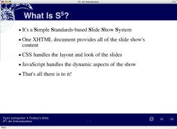
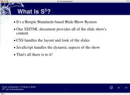

S5 Themes
- you need to wrap your images in a paragraph tag class called "imgcon".
- Not sure how to do this yet


 (one way of presenting multiple graphics)
(one way of presenting multiple graphics)

(one way of presenting multiple graphics)
(one by one!)